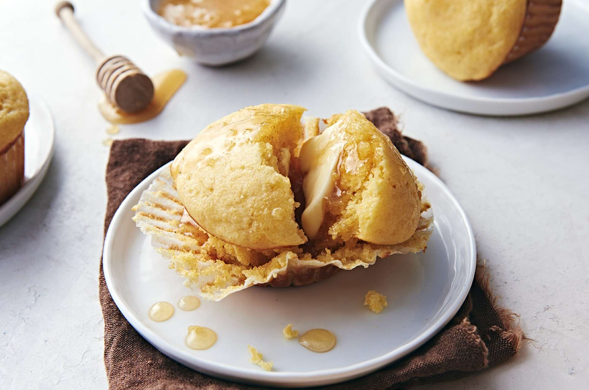

Gluten-Free Corn Muffins

Description
These moist and tender corn muffins are great for breakfast or dinner.
Ingredients
Dough
- 1 cup Gluten-Free All Purpose Baking mix
- 2/4 cup gluten-free cornmeal
- 1/3 cup granulated sugar
- 1 teaspoon baking powder
- 1/2 teaspoon salt
- 2 tablespoons melted butter OR 2 tablespoons vegetable oil
- 2 large eggs
- 1 cup milk
- 1/2 teaspoon vanilla extract
- 1 cup add-ins (dried cranberries, chocolate chips, etc) optional
Steps
- Preheat the oven to 375°F. Grease 9 muffin cups in a 12-cup standard muffin pan.
- Stir together the dry ingredients; set aside.
- Whisk together the melted butter or oil, eggs, milk, and vanilla.
- Stir the dry ingredients into the wet ingredients. Scrape the bottom and sides of the bowl and continue to stir for about 30 seconds, until well blended.
- Stir in the add-ins (if used).
- Fill the muffin cups almost full. Let the muffins rest for 10 minutes.
- Bake the muffins for 20 to 25 minutes, until a cake tester or toothpick inserted into the center of a muffin comes out clean.
- Remove the muffins from the oven, and after 5 minutes transfer them to a rack to cool.